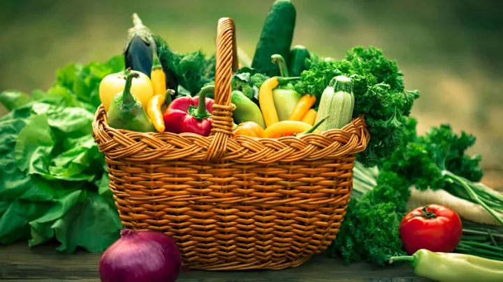

Organic Foodoffers numerous health benefits.It is produced using natural method and is often Chemical-free.
Choosing organic means no pesticides usedin your meals.
Essential nutrients like vitamin B12And Omega-33are found in many products.
Start eating healthy today!

Take care of your body.It's the only place you have to live.-Jim Rohn